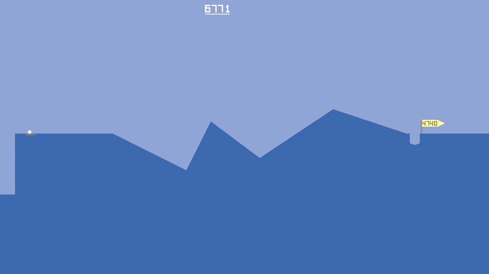

- 2020-04-24 周五
- 文章
也许，生活在某种程度上也算是西西弗斯的修炼吧。
就在前2天，我用了有近4年的手机突然坏了。其实我早就有更换的计划，一开始说要等到高中毕业，后来因为摄像头出了问题又缩短到半年之后，但我没想到的是，在2天前的早上它突然无法开机了。费了好大劲才在中午进了系统，我有点茫然地看着一堆被“困”在手机里的数据，有几年来拍的照片、保存的同学老师的表情包、游戏的进度、下载的文件等等，甚至还有3年前不知道拍下来发给谁的数学作业，忘了删也留在了储存空间里。
其实，这些数据本没有意义，是我这4年的回忆与成长经历赋予了这些数据意义，甚至这部手机本身，也成为了我记忆的一部分。几个月前我就曾谈过，当下我们正处于一个“云”时代，互联网代替硬盘给我们储存了无数信息，但是互联网为我们储存的这些信息又是那么的不可靠，以至于经常有人调侃，“互联网的记忆只有7秒”，过了这段时间，信息便失去了时效性，被扫入了历史的垃圾堆。而在我旧手机不能开机的短短半天里面，我深切地体会到，本地的数据也是那么的脆弱，小小的一部手机就像我回忆的坟墓，我在外头，它在里头，数据线有时只是一个摆设。
人总是要向着未来看的，也许在4年前以及现在，我就该预料到，数据有丢失的一天、记忆有忘却的一天，这样的话，我面对着无法导出的数据，应该会坦然一些。
最后，照片被我复制出来了，很多软件在登录账号之后也重新加载了数据，但是游戏数据和记录就只能作为截图导出，在新手机里显然是无法继续玩了。熟悉我的朋友可能知道我喜欢玩一个叫做“沙漠高尔夫”的游戏，在这个游戏里可以无穷无尽地打高尔夫，除了一片沙漠和高尔夫球，只有两个记录洞数和杆数的数字。说来伤感，在近4年里，我打进了4700多洞，打了6700多杆，但这个数字最终也只能停在6771……
不像4年前，这次我拿到新手机不是很高兴，我看着新手机里好似欢迎新玩家的游戏界面，笑了，这不就像是西西弗斯和他的滚石吗？
你能接受生活的西西弗斯挑战吗？
我在游戏中，又一次挥出第一杆。
